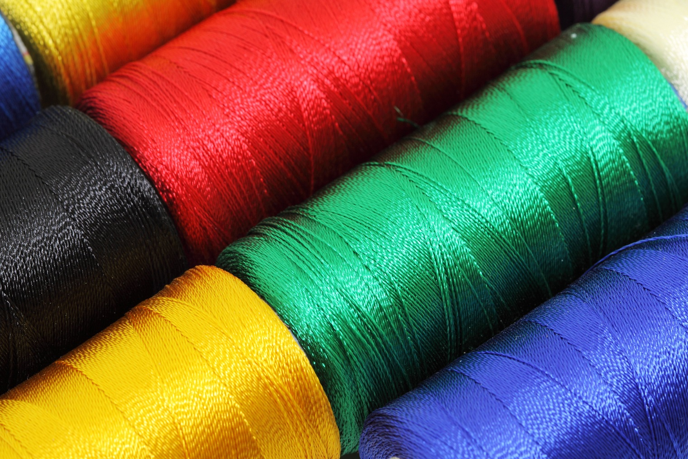

Garen kunnen gemaakt worden van verschillende soorten materialen, namelijk dierlijke materialen,
plantaardige
materialen, of synthetische materialen.
Dierlijk materiaal
Veel mensen noemen alle garen wol. Dit is niet juist, alleen het garen van dierlijk materiaal is echt
wol.
Wol is goed warmteregulerend en wordt vooral in de winter veel gedragen. Alle wol dat niet chemisch
bewerkt is kan vervilten.
Wol kan van verschillende diersoorten komen en wordt over het algemeen diervriendelijk geschoren.
De meest bekende is schapenwol van schapen zoals we die in nederland in de wei zien staan.
Ook heb je nog wol van merinoschapen, dit is veel minder kriebelig dan gewone schapenwol en is geschikt
voor gevoelige huidjes.
Een andere veel voorkomende soort wol is van alpaca's.
De meeste mensen vinden dit zachter en minder kriebelen dan schapenwol, maar er zijn ook mensen die het
wol van alpaca's juist veel meer vinden prikken en kriebelen.
Verder zijn er nog allerlij verschillende luxe garen van andere diersoorten,
zoals mohair en kashmier van geiten, angora van konijnen, wol van kamelen.
Je kunt het zo gek niet bedenken, van elk dier met lang haar kan in principe wol gemaakt worden.
Er zijn zelfs mensen die het haar van hun huisdier verzamelen en daar wol van (laten) maken.
Dan heb je ook nog zijde. Dit wordt ook gemaakt van dierlijk materiaal maar wordt op een andere manier
gewonnen.
Dit komt namelijk van zijderupsen. Rupsen worden niet geschoren, maar zodra ze in een kokon gaan om een
vlinder te worden,
worden ze gemalen en wordt het zijde er tussen uit verzameld.
Plantaardig materiaal
Er kan garen gemaakt worden van plantaardige materialen.
De meest bekende hiervan is katoen. De meeste t-shirts en spijkerbroeken bestaan voor het grooste deel
uit katoen.
Dit materiaal is over het algemeen zacht en soepel en neemt goed vocht op.
Verder wordt er ook garen gemaakt van hennep, dit is een stuk stugger en minder zacht dan katoen.
Een ander bekend materiaal is linnen, het is zachter dan hennep, maar minder zacht dan katoen.
Bamboe als garen raakt steeds meer in trek, dit is nog zachter dan katoen en neemt ook heel goed vocht
op.
Tegenwoordig wordt ook wel veel gebruikt van viscose, dit wordt gemaakt van houtpulp. Het garen hiervan
is vaak zacht, maar niet heel sterk.
Het wordt erg breekbaar als het nat wordt.
Synthetisch materiaal
Er zijn garen die gemaakt worden van synthetisch materiaal. Aardolie wordt hierbij omgezet tot polymeren,
die
dan weer gesponnen worden tot garen.
De bekendsten zijn nylon, polyamide, polyester en acryl.
Acryl wordt vaak door mensen gebruikt als vervanging voor wol. Het heeft een beetje hetzelfde uiterlijk
als wol en het is ook redelijk warm.
Het is wel een stuk minder goed vocht afdrijvend, dus je gaat wel sneller zweten.
Nylon, polyamide en polyester worden vooral gebruikt voor sportkleding, maar ook wel voor overhemden en
gewone t-shirts.
Het is heel sterk materiaal en kan goed gewassen worden zonder dat het verslijt.
